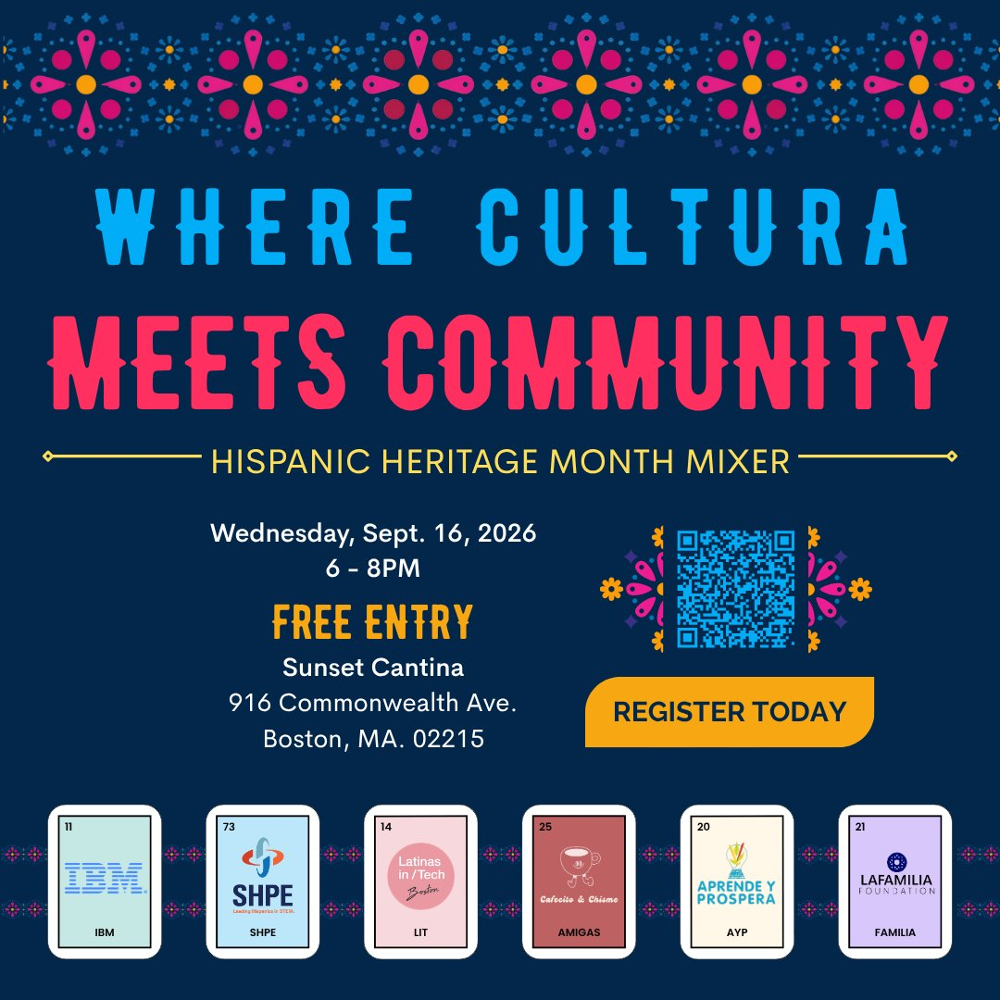
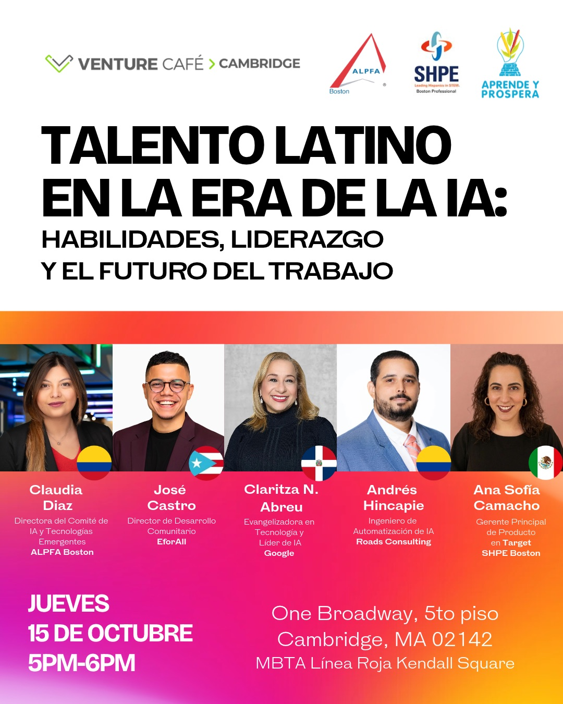
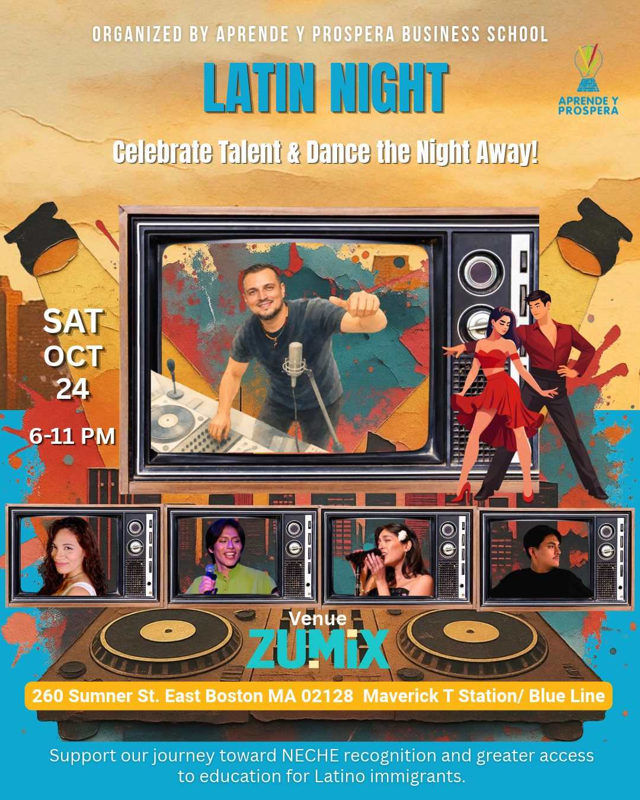
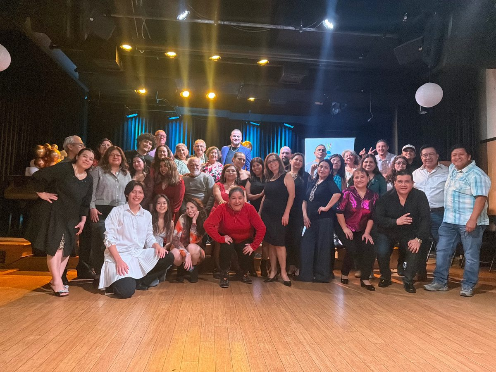
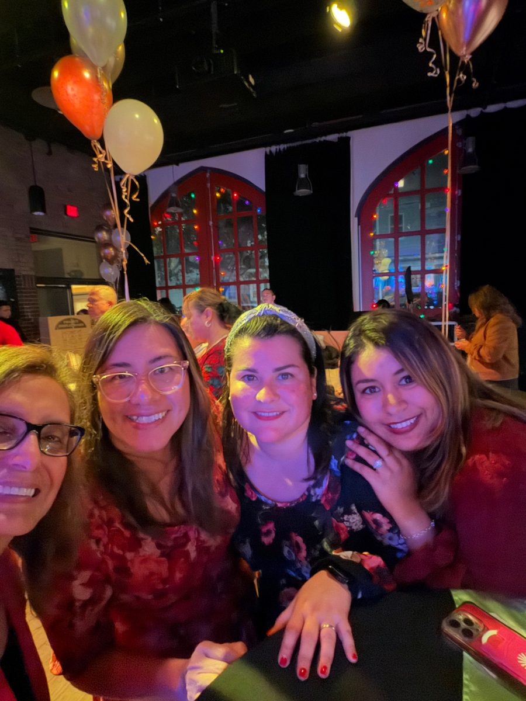
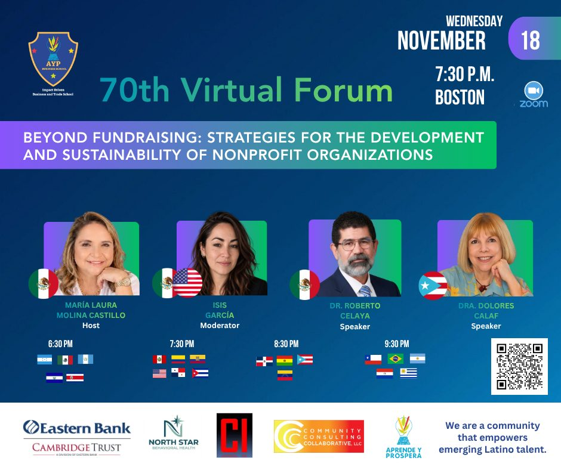
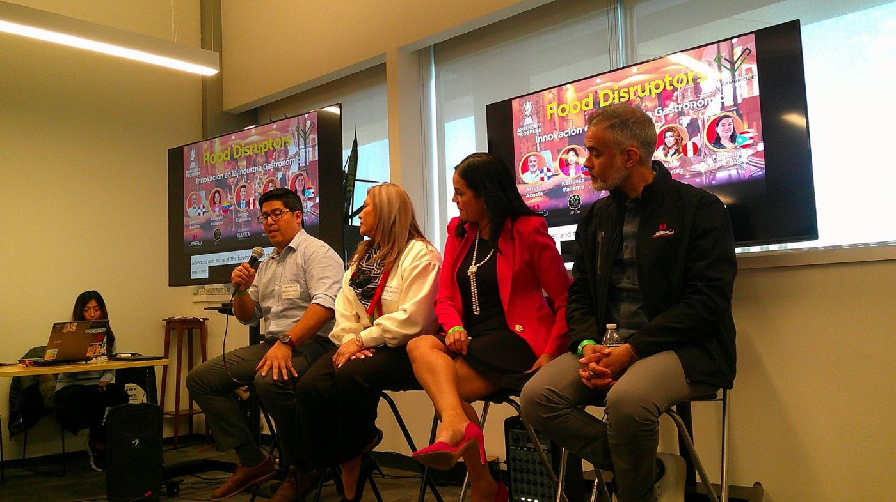

Para egresados
Ingresa con tu cuenta para ver ofertas laborales, eventos para exalumnos y actividades de desarrollo profesional.
Ingresar al Banco de TalentoInicio Comunidad
Egresados, docentes, voluntarios, aliados y donantes de América Latina y Estados Unidos. Conoce cómo conectarte, aprender con nosotros y apoyar nuestra misión.

Ingresa con tu cuenta para ver ofertas laborales, eventos para exalumnos y actividades de desarrollo profesional.
Ingresar al Banco de TalentoLas empresas y organizaciones interesadas en contratar a nuestros egresados, recibir practicantes, proponer retos para nuestras especializaciones, ser mentores, participar como panelistas en nuestros Foros Virtuales o patrocinar becas pueden solicitar ser empresas aliadas. AYP revisa cada solicitud y, una vez aprobada, la empresa accede al portal para publicar oportunidades y conocer el talento.
Nuestros egresados siguen conectados a través de encuentros sociales, actividades de desarrollo profesional y oportunidades para volver como mentores, docentes o voluntarios.
Cada tercer miércoles del mes, expertos internacionales en innovación, tecnología, negocios y desarrollo personal. En vivo por Facebook, YouTube y LinkedIn. Llevamos 70 foros desde 2020.
Paneles y talleres donde la innovación y la tecnología se encuentran con distintas industrias, en Venture Café Cambridge, con transmisión en vivo.
Líderes globales comparten estrategia, mercados y transformación con las nuevas generaciones.
Ecosistemas de Innovación EdTech: Modelos de Escalabilidad y Alianzas Estratégicas en LatAm.
Regístrate gratisEste año salimos a encontrarnos en persona con la comunidad, además de nuestros foros virtuales.

Hispanic Heritage Month Mixer
Un encuentro abierto y gratuito para celebrar la cultura latina y conectar con la comunidad profesional de Boston.

Habilidades, liderazgo y el futuro del trabajo

A Night of Music, Movement & Flavors from Across Latin America
Una noche de baile, talento y sabores de América Latina. Cuatro cantantes nos hicieron disfrutar de su voz y bailar, junto a DJ Johnny Giraldo y una clase de salsa para principiantes.




Estrategias para el desarrollo y la sostenibilidad de las organizaciones sin fines de lucro
 Más allá del juego. ¿Qué es realmente gamificar?
Más allá del juego. ¿Qué es realmente gamificar? Foro 69: IA: de la medicina humana a la medicina inteligente
Foro 69: IA: de la medicina humana a la medicina inteligente Master Class: IA generativa como aliada en el diseño instruccional
Master Class: IA generativa como aliada en el diseño instruccional Master Class 1: Gaming, TikTok y cambio climático
Master Class 1: Gaming, TikTok y cambio climático



Revista digital semestral y gratuita en español sobre educación, innovación, emprendimiento y desarrollo del talento latino. Ya está disponible el segundo número.

Envía tus propuestas de artículos a rcelaya@aprendeyprospera.org.
Somos una comunidad de 130 voluntarios en 20 países de América Latina y Estados Unidos. Gracias a su trabajo, nuestros programas pueden tener un subsidio tan alto.
Apoya la gestión de proyectos institucionales y académicos.
Diseña y mejora cursos y materiales para el Campus Virtual.
Gestiona nuestras redes sociales y la comunicación con la comunidad.
Acompaña a estudiantes y emprendedores con tu experiencia profesional. Los mentores guían proyectos reales en nuestras especializaciones y en Project Lab.
Quiero ser mentorApoya a estudiantes con talento y limitaciones económicas. Gracias a nuestros patrocinadores, tres estudiantes cursaron la cuarta edición de Project Management.
¿Quieres patrocinar a un alumno para que entre al programa? Escríbenos a info@aprendeyprospera.org.
Quiero patrocinar a un alumnoTu donación hace posible que jóvenes profesionales accedan a educación de calidad y a empleo digno. Las donaciones a AYP Business School, organización 501(c)(3), son deducibles de impuestos en Estados Unidos según la ley.
Donar ahora con PayPalLa donación se procesa de forma segura en PayPal a nombre de AYP Business School.